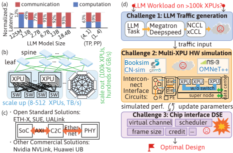
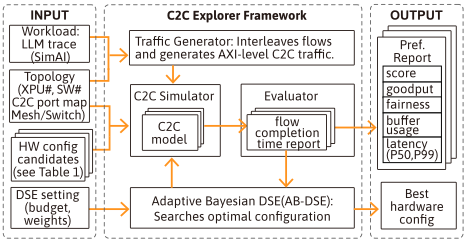
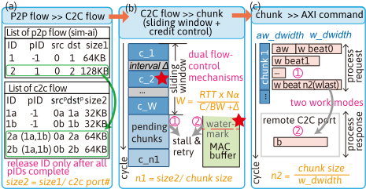
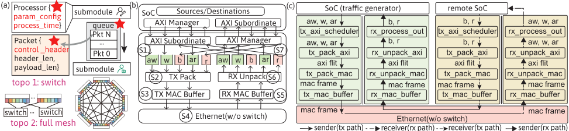
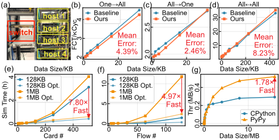
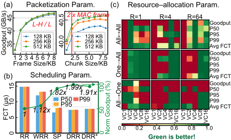
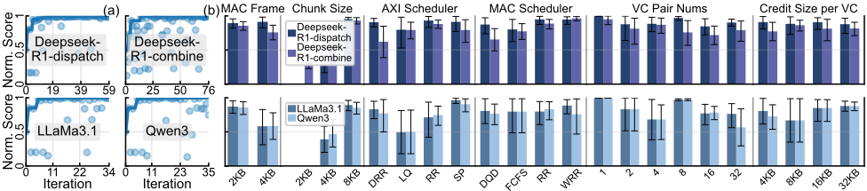

C2C-Explorer：面向 LLM 云计算系统的芯片间（Chip-to-Chip）互连架构探索框架
论文针对 LLM 多芯片系统中芯片间（C2C）互连设计缺乏专用 EDA 工具的问题，提出 C2C-Explorer：一个将 LLM workload 驱动流量生成器、可扩展互连仿真器（switch/fullmesh，最多 512 芯片）与自适应贝叶斯 DSE 引擎整合为 workload-to-hardware 优化流水线的框架。流量生成器将 SimAI 的 P2P trace 经滑动窗口+credit 双流控转换为 AXI 级 C2C 流量；仿真器基于 SimPy/PyPy JIT，用 cycle（端口）+event（交换/链路）混合时序模型在 S1-S7 七级流水线上建模 packetization、scheduling 与 resource-allocation 三类设计参数。经 400Gbps FPGA 原型校准，端到端时序误差 2.46-8.23%，混合模型较纯 cycle-accurate 基线最高加速 7.8×。在 32-XPU DeepSeek-R1-671B 推理用例中，约 20 次迭代收敛，最优配置较最差可行设计 goodput 提升 44.1%、内存降低 98.4%，可行空间由 2394 缩至 1152。该框架已开源，对团队 UCIe 等 C2C 互连 IP 的架构定义与 workload-driven 性能建模有直接参考价值。
LLM 部署转向多节点多加速器 supernode 后，芯片间通信在训练中占迭代时间 90% 以上、推理中占总延迟 50% 以上，C2C 互连成为瓶颈；但为 LLM workload 设计高效 C2C 硬件架构面临三大挑战：生成真实的 LLM 专用 C2C 流量、大规模精确仿真硬件级通信、高效探索指数级大的 C2C 设计空间。现有 LLM 仿真器（Vidur、SimAI、vTrain）的 trace 不映射到物理硬件路径，架构感知仿真器（LLMServingSim、Calculon、LLMCompass）通信建模依赖解析或简化抽象，NoC/chiplet/系统级仿真器（BookSim、Garnet、CN-Sim、ns-3、OMNeT++）无法捕捉 scale-up 芯片与 scale-out 系统结合的硬件级通信行为。
C2C-Explorer 由四个模块构成闭环：(1) 流量生成器：将 SimAI 生成的 LLM P2P trace 经三阶段（P2P→C2C flow 映射、BDP 驱动滑动窗口+credit 反压的 chunk 转换、chunk→AXI 命令发射）转换为 AXI 级 C2C 流量，复现真实 AXI burst 语义；(2) C2C 仿真器：基于 SimPy 并以 PyPy JIT 加速，每个 C2C 端口映射为 TX/RX 并发任务、以太网/交换机为共享任务，构成 S1-S7 七级流水线，覆盖 Packetization（S2/S6）、Scheduling（S1/S3）、Resource-Allocation（S3-S5）三个设计轴，支持 CBFC 流控、VOQ 与 RR 仲裁，采用 cycle（端口）+event（交换/链路）混合时序模型；(3) 评估器：从 goodput、P50/P99 延迟、公平性、buffer 使用五个维度归一化加权打分；(4) AB-DSE 引擎：先做硬件可行性剪枝，再用 Latin Hypercube Sampling 多样化初始化，之后以 Gaussian process 代理模型+Expected Improvement 迭代搜索最优配置。
精度：以 1×400Gbps 交换机 + 4 个 FPGA C2C 主机原型为基线，One→All、All→One、All↔All 三种流量模式下端到端时序平均误差分别为 4.39%、2.46%、8.23%
加速：混合 cycle & event 模型较纯 cycle-accurate 基线，128KB 消息在 4→512 XPU（All↔All）下加速 1.1×-7.8×，1MB 消息为 0.98×-6.9×；按 4-128 条串行 flow 计为 0.77×-4.8×（128KB）与 0.72×-5.0×（1MB）；PyPy JIT 在数据量 ≤16MB 时额外提供最高 1.78× 加速
32-XPU DeepSeek-R1-671B 推理用例：AB-DSE 最优配置较最差可行设计 goodput 提升 44.1%、内存降低 98.4%
探索效率：packetization 规则（chunk_size ≥ 2×MAC_frame）将可行配置空间从 2394 缩减至 1152，四个 workload 任务均在约 20 次评估内收敛
调度对比（8-XPU All↔All、64KB）：相对 RR，WRR/SP/DRR-2KB goodput 分别提升 1.12×/1.82×/1.99×；DRR quantum 从 2KB 增至 8KB 使 goodput 下降 4.06%
VC 资源分配：均衡流量（R=1）对 VC 数几乎不敏感，轻度不均衡（R=4）在 4-8 对 VC 时受益，重度不均衡（R=64）需 VC 数接近并发 flow 数才可避免性能崩溃
区别于现有 LLM 系统级仿真器（Vidur/SimAI/vTrain 只做系统级评估、trace 不映射物理硬件路径）与架构感知仿真器（LLMServingSim/Calculon/LLMCompass 依赖解析或简化通信抽象），也区别于 NoC/chiplet/系统级仿真器（BookSim/Garnet/CN-Sim/ns-3/OMNeT++），作者声称其为首个支持 scale-up 通信建模的仿真器：提供 cycle 级、硬件感知的 C2C 通信建模，支持 AXI 级事务、MAC 层动态组帧与 credit-based 流控，并将仿真与贝叶斯 DSE（可行性剪枝+LHS+GP/EI）闭环整合为自动化的 workload-to-hardware 探索流水线。
相关度级别：high
命中能力域：2.1 IP 架构与微架构 | 2.6 仿真性能与加速器
理由：团队产品线包含 UCIe 等 chip-to-chip 互连 IP，论文核心正是 C2C 互连的架构参数（packetization/scheduling/resource-allocation，含 MAC 帧大小、chunk 大小、AXI/MAC 调度器、VC 对数、credit）在真实 LLM workload 驱动下的建模与自动探索，直接命中 2.1 中'互连 IP 顶层与模块级架构设计、workload-driven 性能建模'的工程场景；其 cycle+event 混合时序建模（最高 7.8× 加速）与基于 FPGA 原型的精度校准方法对 2.6 的仿真加速有借鉴价值（注意论文属架构仿真加速，非验证 Emulation）。论文不涉及 RTL 实现、UVM 验证、形式验证或物理实现，故不命中 2.2/2.3/2.4/2.5/2.7。
建议动作：深入精读并做内部分享
arXiv:2608.08611v1 [cs.DC] 2026年8月9日
大规模语言模型（LLM）的规模化扩展要求计算系统采用多处理器芯片架构，这提升了芯片间（C2C）通信的重要性。然而，为LLM工作负载设计高效的C2C硬件架构面临三大关键挑战：生成真实的LLM特定C2C流量、在大规模条件下准确模拟硬件级通信，以及高效探索呈指数级增长的C2C设计空间。我们提出了C2C-Explorer，一个自适应贝叶斯设计空间探索（DSE）框架，它将LLM工作负载驱动的流量生成器、可扩展的互连模拟器（switch/fullmesh，最多支持512颗芯片）以及度量引导的评估器集成到一个从工作负载到硬件的优化流水线中，从而在真实的LLM工作负载下实现系统化的C2C架构协同设计。经过基于现场可编程门阵列（FPGA）的C2C原型验证，该C2C模拟器在多种流量模式下的端到端时序误差为2.46-8.23%。其混合周期与事件（hybrid cycle & event）模型相比纯周期精确基线，可将大规模仿真进一步加速高达7.8倍。应用于32XPU的DeepSeek-R1-671B推理工作负载时，C2C-Explorer识别出的配置可将有效吞吐量（goodput）提升44.1%，并将内存占用降低98.4%。C2C-Explorer已开源，可在https://github.com/Selinaee/C2C-Explorer获取。
关键词：芯片间通信、超节点（supernode）、横向扩展（scale out）、LLM模拟器、纵向扩展（scale up）、大规模语言模型、云计算系统
随着大规模语言模型（LLM）参数规模的指数级增长，部署策略已从单加速器配置转变为由多节点、多加速器协同工作、构成超节点（super-node）以增强资源协调的系统[1]。这一转变表明，在大规模LLM工作负载中，芯片间通信日益主导计算过程。具体而言，近期研究表明，在典型的并行亲和性配置下，通信占据了超过90%的迭代
本文已被第63届ACM/IEEE设计自动化会议（DAC '26）录用发表，会议于2026年7月26日至29日在美国加利福尼亚州长滩举行。
Jiayi Li △†⋄ □ , Di Wu ⋄ □ , Qingxu Li ⋆ , Hongxiao Zhao △† , Jiaqi Yang △† , Anjunyi Fan △† , Wenbin Zhang ⋄ □ , Boqiang Wu ⋄ □ , Shuting Liu ⋄ □ , Shifeng Fang ⋄ □ , Jianbo Dong ⋆ , Dimin Niu ⋄ □ and Bonan Yan △†∗
△ Institute for Artificial Intelligence, Peking University, Beijing, China; † Beijing Advanced Innovation Center for Integrated Circuits, School of Integrated Circuits, Peking University, Beijing, China; ⋄ Hupan Lab, Hangzhou, China; □ Damo Academy, Alibaba Group, Hangzhou, China; ⋆ Alibaba Cloud, Alibaba Group, Beijing, China

tion time during training (Figure 1(a), left) and exceeds 50% of total latency during inference (Figure 1(a), right), emphasizing the critical demand for high-bandwidth, low-latency interconnects [2, 3, 4].
Figure 1(b) illustrates a typical interconnect architecture employed in LLM computing systems with multiple XPUs 1 .
To achieve optimal deployment of LLM workloads on computing systems with > 10 5 XPUs, it is essential to determine the optimal interconnect in the scale-up domain. However, this endeavor faces significant challenges of lacking appropriate EDA toolkits for:
1 XPUs refer to various architectures of processing units, e.g., central processing units (CPU), graphics processing units (GPU), neural processing units (NPU), tensor processing units (TPU), and FPGAs.
composedaccordingtothephysicalinterconnectstructure and port mapping, a process that is inherently complex and topology-dependent.
To fill this gap, this work presents C2C-Explorer , a joint framework for interconnect hardware design space exploration and communication simulation under LLM workloads. The major contributions include:
To validate C2C-Explorer , we employ LLM and other communication workloads, using real-world FPGA-based C2C host prototypes as a baseline for comparison. The simulator achieves consistently low end-to-end timing error (2.46-8.23%) across multiple traffic patterns. Moreover, the hybrid scheduling model accelerates simulation runtime by up to 7.8 × . With verified C2C-Explorer toolkits, we systematically analyze three core C2C design parameters (packetization, scheduling, and resource-allocation) and evaluate them against standard performance metrics. This analysis reduces the valid configuration space from

2394 to 1152 and achieves convergence to the optimum in approximately 20 iterations under a 32-XPU LLM workload. C2C-Explorer is available at https://github.com/ Selinaee/C2C-Explorer ).
一方面，现有的面向大语言模型（LLM）的仿真框架，如 Vidur [12]、SimAI [13] 和 vTrain [14]，主要聚焦于对现有 GPU 基础设施的系统级性能评估，为大规模部署与调度行为提供了有价值的见解。其中，SimAI 在给定 LLM 工作负载和并行化策略的情况下，能够仿真集合通信算法和 NCCL 原语，从而生成 GPU 到 GPU 的流轨迹，但这些轨迹无法映射到物理硬件路径，因而无法捕捉芯片间（C2C）通信效应。相比之下，LLMServingSim [15]、Calculon [16] 和 LLMCompass [17] 等架构感知仿真器在计算效率建模与加速器设计方面取得了重要进展，但其通信建模通常依赖于解析式或简化的抽象。
另一方面，传统的片上网络（NoC）仿真器，如 BookSim [18] 和 Garnet [19]（集成于 gem5 [20] 中），专注于片上互连，而 CN-Sim [21] 和 HexaMesh [22] 则面向芯粒（chiplet）级网络。对于系统级或横向扩展（scale-out）网络，通常使用 ns-3 [23]、OMNeT++ [24] 等工具。然而，这些工具均无法捕捉由纵向扩展（scale-up）芯片构成的横向扩展系统的硬件级通信行为 [25, 26]。
本工作通过聚焦于特定 LLM 工作负载中的 C2C 通信，弥补了以往研究的空白。它通过一个周期级、硬件感知的通信模型推动了该领域的发展，使得对训练与推理过程中芯片间交互的详细分析成为可能。
图 2 展示了所提出的 C2C-Explorer 框架。它由 4 个模块组成（自上而下）：流量生成器、C2C 仿真器、评估器以及自适应贝叶斯搜索引擎（AB-DSE）。C2C-Explorer 的输入包括：
(i) 由 SimAI [13] 生成的 LLM 执行轨迹，(ii) 拓扑描述（XPU/交换机（SW）数量、C2C 端口映射、mesh 或交换式 fabric），(iii) 候选硬件参数，以及 (iv) 探索预算与指标权重。C2C-Explorer 的输出是系统性能报告，包括得分（score）、有效吞吐量（goodput）、公平性（fairness）、缓冲区（buffer）、P50/P99 延迟，以及实现最优性能的设计参数组合。
C2C-Explorer 的工作原理为：流量生成器发出 AXI 级 C2C 流量 → C2C 仿真器评估每种配置 → 评估器提取流级指标 → AB-DSE 更新搜索分布。在每一步之前都会施加硬件约束（例如 chunk_size ≥ 2 · MAC_frame），以剪除不可行的设计。该循环不断迭代，直至达到预设的迭代预算。各组件的功能与组织方式详述如下。
C2C communication timing is governed by two interacting layers: (1) application-level message generation captured by SimAI, and (2) SoC-side burst pacing combined with link-level credit flow control. The traffic generator embeds sliding window + credit control to faithfully reproduce these cross-layer interactions. As shown in Figure 3, it transforms high-level LLM P2P traces into AXI-accurate C2C traffic through three tightly coupled stages: (a) P2P → C2C flow mapping, (b) C2C → chunkconversion with dual flow-control semantics, and(c) chunk → AXI command emission.
(b) C2C → chunk conversion with dual flow-control semantics. Each C2C flow is segmented into fixed-size chunks ( c _ 1 , c _ 2 , . . . ), which are injected into the pipeline under a BDP-driven sliding window . A new chunk is admitted only when ( active_chunks < W), where the window size is
Symbols: BW (bandwidth), RTT (round-trip time), C (chunk size), ∆ (inter-chunk gap), N (parallel flows), α (safety factor). Simultaneously, the physical-link behavior is modeled using credit-based backpressure : when downstream MAC buffers hit their watermark, credits are exhausted and the generator stalls and retries every cycle.
(c) Chunk → AXI command emission. The generator operates in two AXI-driven modes. On the sender side, each chunkisexpandedintoanAXIwriteburst: one aw request followed by n 2 = C / w d _ width w beats, with the final beat asserting wlast . Onthereceiver side, the remote C2C port detects wlast and emits a b response to acknowledge burst completion. Receiving the b response allows the sender to retire the chunk and decrement active_chunks . This dual-mode behavior reproduces true AXI burst semantics and chunk-level timing fidelity.

C2C simulator covers both hardware modules (virtual channels, scheduling, flow control) and network behavior (Ethernet framing and switching), combining cycle-level port modeling with event-driven Ethernet/link modeling to balance timing fidelity and scalability. It is built on SimPy and accelerated with PyPy JIT [27].
Figure 4(a) summarizes the simulator's three core features:
Figure 4(b) shows the hardware architecture; Figure 4(c) presents its software-mapped counterpart in our simulator. In software, each C2C port is instantiated as two concurrent tasks: a TX task executing the tx path (S1 → S2 → S3) and an RX task executing the rx path (S5 → S6 → S7). The Ethernet (w/o switch) is modeled as a separate shared task corresponding to stage S4, with which all ports interact during Consumer Model Notation: DRR = deficit round-robin (4 KB quantum); LQ = longest-queuefirst; RR = round-robin; SP = strict priority (DA 0 → 31); DQD = DA-queuedepth; FCFS = first-come first-served; WRR = weighted round-robin (uniform).

| Attr. | Submodule | Parameter | Value in Cases (Sec. 6) |
|---|---|---|---|
| traffic_generator | chunk_size | 2KB, 4KB, 8KB | |
| tx_axi_scheduler | AXI scheduler | DRR, LQ, RR, SP | |
| tx_pack_mac | MAC_frame_size | 2KB, 4KB | |
| tx_mac_buffer | VC_pair_nums | 1,2,4,8,16,32 | |
| tx_mac_buffer | VC scheduler | DQD, FCFS, RR, WRR | |
| rx_mac_buffer | credit | 4KB, 8KB, 16KB,32KB | |
| Legend: | Packetization | Scheduling | Resource-Allocation. |
| Attr. | Submodule | Parameter | Value in Cases (Sec. 6) |
Our simulator exposes many tunable C2C parameters; Table 1 lists the core ones used in this study.
transmission. Together, they form the full end-to-end transfer loop between C2C ports.
The simulator follows this path through a 7-stage pipeline (S1-S7) across multiple C2C ports, with each stage aligned to one or more evaluation axes-Packetization (S2, S6), Scheduling (S1, S3), and Resource-Allocation (S3-S5). These mappings correspond directly to the attribute annotations in Table 1.
(S1) SoC-C2C 边界调度 [Scheduling]。由流量生成器触发的 AXI 突发传输进入按目的地址（DA）划分的队列。tx_axi_scheduler 使用可配置的策略选择要服务的 DA。(S2) TX 打包 [Packetization]。AXI 通道（图 4(b)&(c) 中的 aw、w、ar、r、b）在 tx_pack_axi 中被封装为 AXI flit，并在 tx_pack_mac 中聚合为 MAC 帧。当 DA 发生变化时帧即关闭，以避免跨目的地的交织。请求（aw、w、r）与响应（b、ar）数据通路在物理上分离，以避免双向队头阻塞，尤其是在 all-reduce 流量下。(S3)：TX MAC 缓冲 [Scheduling + Resource-Allocation]。MAC 帧被放入按虚拟通道（VC）划分的缓冲区。在 tx_mac_buffer 中，VC 编号、VC 分配与 VC 调度共同决定出口顺序。基于信用的流控（CBFC）在下游缓冲区已满时对传输进行节流。(S4) 以太网（无交换机）[Resource-Allocation]。对于点对点（P2P）链路，该级具有固定的传播延迟加上每帧的串行化延迟。当配置为交换机时，它建模一个输入排队的交叉开关，其中包含按 (src,dst,vc) 划分的虚拟输出队列（VOQ）和轮询仲裁。直通传输通过使交换机处理与链路传输相重叠来近似。该级捕获 VC 利用率限制、信用可用性以及多端口争用。(S5) RX MAC 缓冲 [Resource-Allocation]。到达的 MAC 帧进入按 VC 划分的 RX 缓冲区。一经准入，信用即返还给发送方，从而完成 CBFC 闭环。(S6) RX 解包 [Packetization]。MAC 帧被分解为 AXI flit，进而分解为单个 AXI 事务。这一过程逆转 S2，并在接收端 SoC 上重构包级与事务级结构。(S7) RX 处理输出与完成信令。接收方向远端发送方发出 AXI 响应（b / r）。只有当发送方收到最终响应时，一个 chunk 才算完成，从而实现精确的端到端时序测量。
C2C 模拟器记录每个流完成时间（FCT），使评估器能够据此推导系统级通信指标。我们从 5 个维度评估每种配置：吞吐量、P50 延迟、P99 延迟、公平性以及缓冲区使用量（表 2）。其中，缓冲区使用量 N V · C B 反映的是相对的缓冲区配置规模，而非字面意义上的硬件大小。为了得到作为 AB-DSE 搜索算法优化目标的标量分数 S，每个指标均被归一化并通过加权和方式组合，其中有效吞吐量（goodput）直接作为奖励项计入，而所有其他指标则被最小化。对于第 6 节中的用例，权重优先考虑吞吐量（40%）和尾延迟（25%），这反映了大规模推理工作负载的需求。
利用 3.3 节中定义的评分函数，最后一步是在庞大的 C2C 设计空间中搜索最优组合。我们开发了一个 AB-DSE 引擎，它紧密集成了端到端工作流：将硬件感知约束、周期精确仿真与指标驱动优化耦合在一起。
如 Algorithm 1 所述，AB-DSE 首先应用 C2C 可行性剪枝，剔除在解析上被支配的组合（例如次优的 chunk-frame 比例），从而将搜索限制在设计空间中更高效的区域 [28] [29]。随后，它采用拉丁超立方采样（LHS）进行面向多样性的初始化，其中每个采样得到的配置都在 C2C 仿真器中进行仿真，并在评估器中打分。在此种子阶段之后，AB-DSE 进入贝叶斯细化循环。在累积的历史数据上训练高斯过程代理模型，并由期望改进（EI）选出有望改善有效吞吐量（goodput）、延迟、公平性或缓冲区使用量的下一个候选配置。代理模型被迭代更新。当探索预算耗尽时，AB-DSE 输出得分最高的配置，该配置代表了在给定 LLM 流量与拓扑下，三个 C2C 轴向上所能达到的最佳平衡 [30] [31]。
输入：设计空间 X，预算 B，比例 α，流量 T
输出：最优配置 x ⋆
1: X ← {x ∈ X | hw_constraints(x)}，H ← ∅，B init ← ⌊αB⌋ ▷ 初始化：拉丁超立方采样（LHS）多样化
2: for i = 1 to B init do
3: x i ∼ LHS(X)；m i ← SimulateC2C(x i , T)；S i ← Evaluate(m i)
4: H ← H ∪ {(x i , S i)}
5: end for ▷ 贝叶斯优化（BO）：C2C 引导的细化
6: for i = B init + 1 to B do
7: 在 H 上拟合高斯过程（GP）代理模型 g
8: x i ← arg max x∈X EI(x; g, H)
9: m i ← SimulateC2C(x i , T)；S i ← Evaluate(m i)
10: H ← H ∪ {(x i , S i)}
11: end for
12: return x ⋆ ← arg max (x,S)∈H S
所提出的 C2C 模拟器在减少模拟时间的同时实现了较高的仿真精度。验证实验及其结果详述如下。
| Metric | Formula | Unit | Goal | w m | Description |
|---|---|---|---|---|---|
| Goodput | ∑ B i / T max | GBps | ↑ | 0.4 | System throughput |
| P50 Lat. | Q 0 . 5 ( { F i } ) | cycles | ↓ | 0.15 | Median FCT |
| P99 Lat. | Q 0 . 99 ( { F i } ) | cycles | ↓ | 0.25 | 99th-percentile FCT |
| Fairness | σ F / µ F | - | ↓ | 0.05 | Coeff. of variation |
| Buffer | N V · C B | KB | ↓ | 0.15 | Buffer per port |
| Metric | Formula | Unit | Goal | w m | Description |
符号说明：B i = 流 i 的数据量（字节）；T max：最大流完成时间（FCT，周期数）；F i ：流 i 的 FCT；Q p ：p 分位数；σ F 、µ F ：所有流 FCT 的标准差与均值；N V ：VC 数量；C B ：信用值大小；Norm ( m ) = ( m - m min )/( m max - m min ) 。
评分：S = ∑ m w m · ϕ m ( Norm ( m )) ，其中 ϕ Goodput ( x ) = x ，其余指标为 1 - x

据我们所知，目前尚无现有模拟器支持纵向扩展（scale-up）通信建模。参照 ETH-X 白皮书报告，我们采用相同的链路带宽（400Gbps）、交换机转发延迟（467 ns）和端口处理延迟（245 ns）来配置我们的模拟器，以对公开技术报告 [33] 中描述的数据链路进行建模。为验证准确性，我们进一步搭建了一个真实的 400 Gbps 系统原型，由 1 台交换机和 4 个基于 FPGA 的主机构成（图 5(a)）。该平台展现出与 ETH-X [32] 相同的数据通路行为。图 5(b-d) 在三种代表性通信模式下对 4-XPU 系统进行了评估：(One → All)、(All → One) 和 (All ↔ All)。x 轴表示所传输的消息大小（KB），y 轴表示所有流的流完成时间（周期）。每个场景在一系列消息大小上进行扫描（(b) 和 (c) 为 1 KB-32 KB，(d) 为 1KB448KB），从而为每种通信模式产生多个评估点。在这些场景中，所有扫描点相对于 ETH-X 测量值的平均误差分别为 4.39%、2.46% 和 8.23%，处于可容忍范围内。
C2C-Explorer 中的混合建模（将交换机事件调度与 C2C 端口周期调度相结合）可以加快大规模仿真。图 5(e)-(f) 在 2 × Intel Xeon Platinum 8358（1TB 主存）平台上将该方法与纯周期精确基线进行了对比评估。在图 5(e) 中，x 轴为并发通信的 XPU 数量，而图 5(f) 则采用串行化流的数量。两者的 y 轴均报告端到端仿真时间。在图 5(e) 中，对于 128 KB 消息，当并行度从 4 个 XPU 扩展到 512 个 XPU 时（All ↔ All 通信），混合调度器实现了 1.1 × -7.8 × 的加速比。对于 1 MB 消息，相应的加速比范围为 0.98 × -6.9 ×。在图 5(f) 中，对于跨 4-128 条串行化流的 128 KB 消息，混合调度器实现了 0.77 × -4.8 × 的加速比。对于 1 MB 消息，范围为 0.72 × -5.0 ×。图 5(g) 报告了在 13th Gen Intel Core i7-1355U CPU（16GB 主存）上随消息大小增加时的点对点（P2P）性能；y 轴显示单位仿真时间内传送的数据量。PyPy 即时编译（JIT）运行时提供了额外的加速，最高可达 1.78 × @datasize ≤ 16MB。根据图 5(g) 中的趋势，我们预计当数据大小超过 16MB 时，加速比将进一步增大。

基于经过验证的 C2C 仿真器，我们使用 C2C-Explorer 分析在大语言模型（LLM）工作负载下，分组化（Packetization）、调度（Scheduling）与资源分配（Resource-Allocation）对 C2C 互连性能的影响。
在图 6(a) 中，左侧子图的 x 轴扫描 MAC 帧大小（KB），右侧子图的 x 轴变化分块（chunk）大小（MAC 帧大小固定为 1 KB）。两个子图的 y 轴均报告 P2P（无交换）传输下测得的有效吞吐量（goodput，GB/s）。三条曲线分别对应 128 KB、256 KB 和 512 KB 的总消息大小。当 MAC 帧从 1 KB 增长到 8 KB 时，有效吞吐量急剧上升，随后趋于饱和，其变化遵循 MAC 效率 ( L - H )/ L ，其中 L 为 MAC 帧长度，H 为每帧固定的协议开销。增大 L 可以摊薄 H ，从而提高有效吞吐量。有效吞吐量随分块大小的增大而提升，当分块长度达到大约 MAC 帧大小的两倍时趋于平稳。每个分块都会触发一次独立的 AXI 写突发（write burst），包含各自的地址、控制和响应阶段；对于较小的分块，这种每事务开销占主导地位，从而降低吞吐量。随着分块大小的增大，该开销被摊薄到更多的有效载荷上；一旦 AXI 流水线和链路都得到充分利用，有效吞吐量便趋于饱和。
图 6(b) 在 8-XPU（All ↔ All）实验中、消息大小为 64 KB 的条件下，比较了五种 AXI 发送端调度器。x 轴列出各调度策略，y 轴给出时延（P50/P95/P99 FCT；越低越好）和归一化有效吞吐量（越高越好），从而可以在不同调度策略下对吞吐量与时延进行联合比较。我们评估了：RR（等权轮询）、WRR（加权轮询；各目的地址（DA）的权重为 8:4:2:1:1:1:1:1）、SP（对 DA 采用严格优先级；优先级顺序为 0 → 7）以及 DRR（赤字轮询）。在 DRR 中，量子（quantum，取 2 KB 或 8 KB）设定了每个 DA 在每个服务轮次中可发送的最大字节数；较小的量子可强化公平性，而较大的量子允许更长的突发传输，但代价是对队头阻塞（HoL blocking）更为敏感。相对于 RR，WRR 和 SP 均提升了有效吞吐量（分别为 1.12 倍和 1.82 倍），而 DRR-2KB 获得了最高增益（1.99 倍）。RR 的不公平性较低，但性能不佳，原因在于其频繁的目的地切换阻碍了 MAC 帧聚合，从而增加了每帧开销。相比之下，DRR 在一个量子内向同一目的地发送多个数据包，从而能够形成更大的 MAC 帧，获得更高的链路效率。然而，将量子从 2 KB 增大到 8 KB 会轻微损害性能（DRR-8KB 使有效吞吐量降低 4.06%），因为粗粒度的服务会让某个目的地主导一个调度窗口，并加剧队头阻塞（HoL blocking）。
图 6(c) 量化了在 8-XPU 系统中，虚拟通道（VC）数量如何影响三种通信模式（All ↔ All、All → One、One → All）下的芯片间（C2C）性能。每个热力图单元格显示归一化得分（绿色 = 更高），横轴为 VC 对，纵轴为评估指标（有效吞吐量（Goodput）、P50/P95/P99、平均流完成时间（FCT））。我们扫描了三种流大小不平衡水平（R = max / min）：均衡（64KB，R = 1）、轻度不平衡（32/64/128 KB，R = 4）和重度不平衡（8/64/512 KB，R = 64）。结果揭示出一个清晰的趋势：均衡流量对 VC 数量几乎不敏感；轻度不平衡可从 4-8 个 VC 对中获益；重度不平衡则会导致性能崩溃，除非 N V 接近并发流数量。这一行为源于每个 VC 的有效不平衡度。在全局并发度为 C 且 VC 对数为 N V 的情况下，每个 VC 承载约 C / N V 条流，由此得到 R eff ≈ 1 + ( R - 1) ( C / N V ) - 1 C - 1 。随着 N V 增大，R eff → 1，从而减少队头阻塞（HoL blocking）并恢复吞吐量。当 N V 较小时，R eff ≈ R，不平衡度
| Task | Goodput | P50 Lat. | P99 Lat. | Fairness 1 | Buffer 2 |
|---|---|---|---|---|---|
| dispatch | +14.7% | -12.6% | -12.6% | + 0.001 | -75% |
| combine | +44.1% | -30.4% | -30.4% | - | -98.4% |
| LLaMA3.1 | +51.7% | -68.7% | -68.7% | -0.087 | -75% |
| Qwen3 | +50.5% | -64.3% | -64.3% | -0.034 | -96.9% |
| Task | Goodput | P50 Lat. | P99 Lat. | Fairness 1 | Buffer 2 |
符号说明：各指标定义汇总于表 2。1 数值越低越好。
2 缓冲区使用量。
7

| Feat. | This Work | bookSim [18] | garnet [19] | cnsim [21] | ns-3 [23] | OMNeT++ [24] |
|---|---|---|---|---|---|---|
| LLM 1 | ||||||
| FCT 2 | partial | partial | ||||
| TME 3 | hybrid | cycle | cycle | cycle | event | event |
| AXI 4 | ||||||
| MP 5 | ||||||
| CBFC 6 | ||||||
| SW 7 | partial | partial | partial |
| Feat. | This Work | bookSim [18] | garnet [19] | cnsim [21] | ns-3 [23] | OMNeT++ [24] |
图例：支持；不支持。1 LLM = 支持真实的 LLM 通信轨迹。2 FCT = 支持流完成时间分析。3 TME = 周期/事件/混合时间模型。4 AXI = 支持 AXI 级事务建模。5 MP = MAC 层打包与动态帧构建；bookSim/garnet/cnsim 仅使用固定 flit，而 ns3/OMNeT++ 使用预先构建的 MAC 数据包。6 CBFC = 基于信用的流控。7 SW = 基于交换机的拓扑。
占主导地位——尤其是在 All → One、All ↔ All 模式中。
我们在一个 32-XPU 系统上对 C2C-Explorer 进行评估，使用三种具有代表性的通信工作负载，它们刻画了现代大规模大语言模型（LLM）中的主导通信模式：DeepSeek-R1-671B 推理中的 all-to-all 专家交换 [35]、LLaMA3.1-405B 推理中的 all-reduce 同步 [36]，以及 Qwen3-30B 训练中的梯度 all-reduce 操作 [37]，所有流轨迹均源自 SimAI 剖析（profiling）。
探索涵盖 6 个设计参数（见 3.2 节），涉及打包（packetization）（MAC 帧大小、chunk 大小）、调度（AXI 级调度器、MAC 级调度器）以及资源分配（虚拟通道（VC）对数量、credit）。图 7(a) 展示了归一化得分（y 轴）随探索迭代（x 轴）的变化情况。得分权重遵循表 2。每个蓝色圆点对应一个被评估配置的得分，而蓝色实线追踪迄今为止所取得的最佳得分。所有任务均在 20 次评估内收敛。打包规则（chunk_size ≥ 2 × MAC_frame）适用于除 DeepSeek-R1 combine 之外的所有任务，该规则将可行空间从 2394 个配置缩减至 1152 个配置，剔除了低质量点并加速了收敛。由此得到的最优设计带来了表 3 所总结的改进。图 7(b) 单独呈现了各参数的敏感性。x 轴枚举该参数的候选取值，y 轴显示带 95% 置信区间的平均归一化得分，条形越短反映稳定性越高。参数敏感性未呈现任何单调趋势，凸显了联合优化的必要性。打包的影响最大，但更大的帧大小并非在所有任务上都普遍最优。AXI 侧调度的影响大于 MAC 侧仲裁。VC=1 因缓冲开销最小而常常获得较高得分，但所有工作负载都更倾向于采用多 VC 设计，以平衡吞吐量与延迟。总体而言，最优设置高度依赖于具体工作负载。
本工作提出了 C2C-Explorer，这是一个面向大规模 LLM 工作负载中 C2C 互连的硬件感知设计探索框架。该框架由流量生成器、C2C 模拟器和 AB-DSE 优化引擎组成，可对多 XPU 互连的配置进行仿真与优化。实验结果验证了 C2C-Explorer 的加速执行速度与高精度（<9%），并展示了其在纵向扩展（scale-up）与横向扩展（scale-out）LLM 计算系统中探索通信设计的潜力。